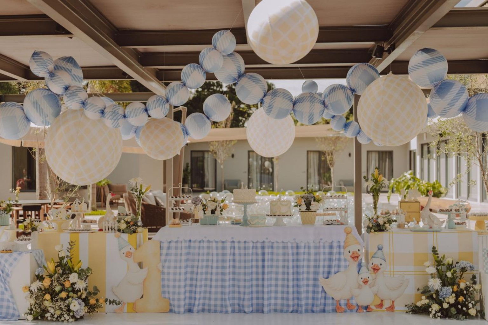
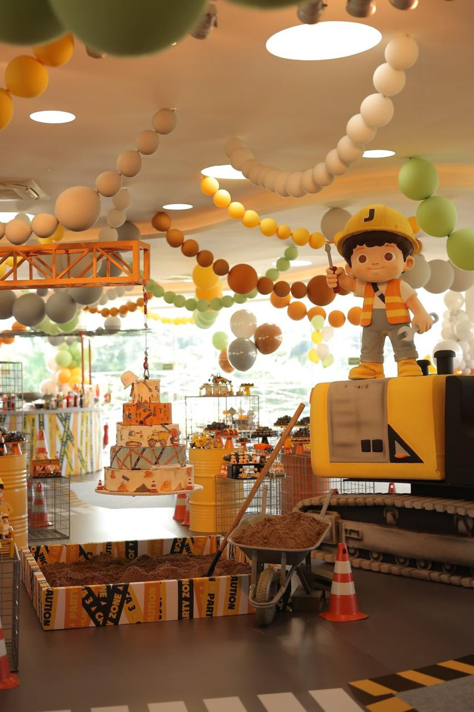
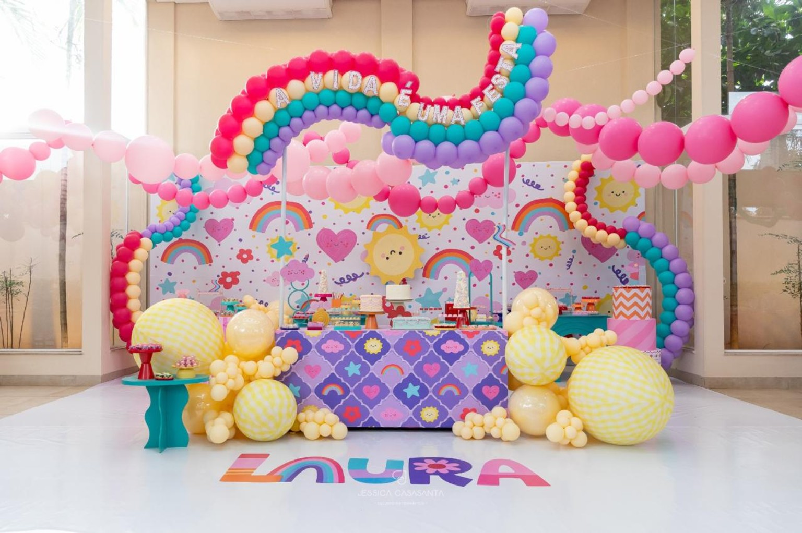
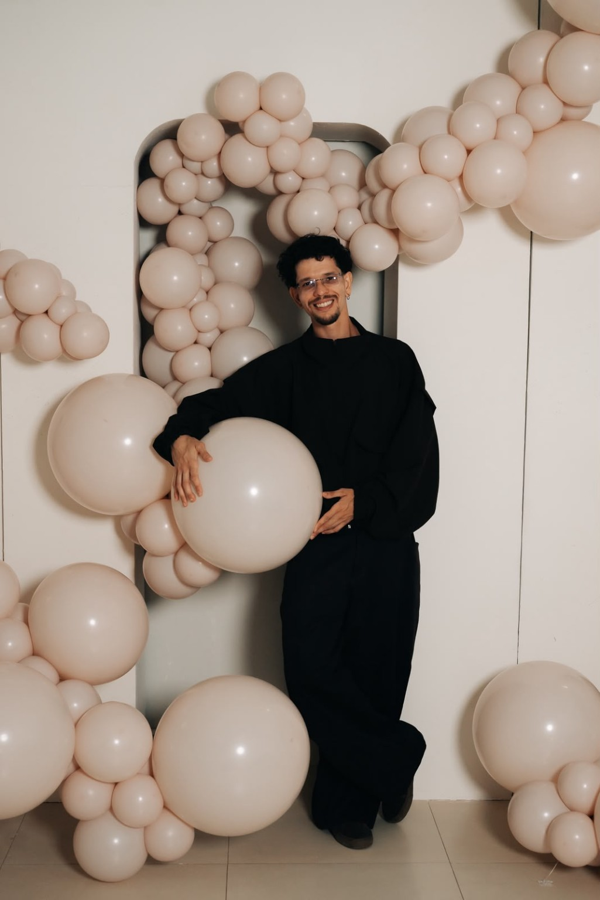

Celebrações com identidade
Festas que ficam na memória.
Experiências autorais, desenhadas com sensibilidade, presença e intenção.
Arte, técnica e identidade
Sou do interior de Minas Gerais e foi daqui que nasceu o meu olhar para a decoração: da vontade de transformar ideias em cenários, detalhes em sentimentos e celebrações em memórias.
Mais do que criar festas bonitas, eu acredito que cada celebração deve ter identidade. Por isso, ao longo da minha trajetória, desenvolvi técnicas autorais e exclusivas e construí uma maneira própria de enxergar e criar festas.
Meu trabalho já passou por grandes palcos, como o The Town e a Celebra Show — a maior feira de decoração da América Latina. Também fui finalista do único reality show do mundo dedicado a decoradores de festas.
Um dos momentos mais especiais dessa trajetória foi assinar o Tendências 2026, um workshop inspiracional sobre tendências no universo das festas, acompanhado por profissionais de diferentes partes do mundo.
Hoje, também percorro o Brasil compartilhando conhecimento em palestras e formações, e já são mais de 300 alunos formados através das minhas técnicas.
Mas, acima de tudo, continuo acreditando que uma festa especial não precisa apenas ser bonita.
Ela precisa contar uma história, transmitir sentimentos e fazer alguém pensar:
“Essa festa só poderia ser nossa.”
Porque, para mim, cada celebração merece ter uma assinatura.
Projetos autorais
para momentos únicos

Delicadeza em harmonia
Azul suave, amarelo-manteiga e estampas xadrez constroem uma atmosfera acolhedora. Flores, patinhos e balões suspensos revelam o equilíbrio entre ludicidade e elegância.

Imaginação que ganha forma
A temática de construção vira uma experiência imersiva, com máquina cenográfica, canteiro, sinalização e peças personalizadas. Cada elemento convida a criança a entrar na história.

Uma explosão de alegria
Arcos-íris, flores e corações se encontram em uma composição cheia de movimento. A paleta vibrante e os volumes de balões criam um cenário leve, afetivo e inesquecível.
Seu evento começa aqui
Vamos imaginar a sua festa juntos?
Conte para nós o que você está imaginando. Vamos conversar sobre o tema, o espaço e cada detalhe que tornará a sua celebração única.
Fale conosco
Método Orgânico Natanael Albino
Você já imaginou conseguir montar decorações orgânicas rápidas, impecáveis e de alto impacto, sem complicação?
Com o Método Orgânico Natanael Albino, eu vou te ensinar a minha técnica exclusiva, testada e aprovada em grandes produções, para transformar a forma como você trabalha com balões.
Este curso foi desenvolvido para quem busca praticidade, agilidade e resultados profissionais.
- Aulas diretas Aprendizado rápido
- 1 ano De acesso às aulas
- Aula on-line Com Natanael Albino
- Comunidade Grupo de alunos
Conteúdo do curso
Aqui você vai aprender
Da escolha das medidas ao acabamento final: uma jornada objetiva para criar estruturas orgânicas mais rápidas, seguras e marcantes.
-
Numeração e medidas dos balões
Entenda de vez como usar cada tamanho para alcançar o efeito perfeito.
-
Técnica de customização
Conheça os segredos para criar balões únicos, com acabamento de alto padrão.
-
Amarração e fixação
Aprenda a amarrar e prender corretamente, sem perder tempo e garantindo durabilidade.
-
Orgânicos de alto impacto
Siga o passo a passo para entregar decorações impressionantes em tempo recorde.
-
Aulas curtas e diretas
Conteúdo facilitado para você aprender com rapidez e sem enrolação.
-
Acesso por 1 ano
Reveja todas as aulas quantas vezes quiser durante doze meses.
-
Encontro on-line com Natanael
Participe de um bate-papo para tirar suas dúvidas após concluir o curso.
-
Grupo exclusivo de alunos
Troque experiências e ideias e amplie sua rede de contatos profissionais.
Um novo jeito de criar
Com o Método Orgânico Natanael Albino, você terá em mãos um jeito simples, rápido e inovador de criar montagens exclusivas que encantam clientes e se destacam no mercado.
O próximo encontro
Vamos celebrar juntos?
Em breve, nossos canais de contato e portfólio estarão disponíveis aqui.
Novidades em breve